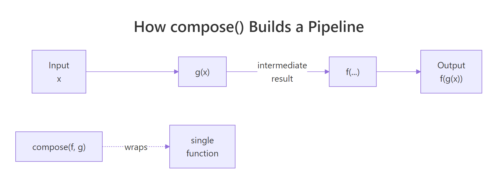
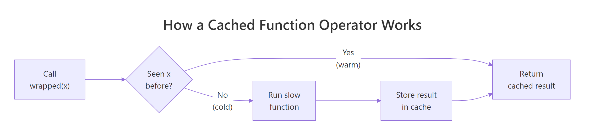
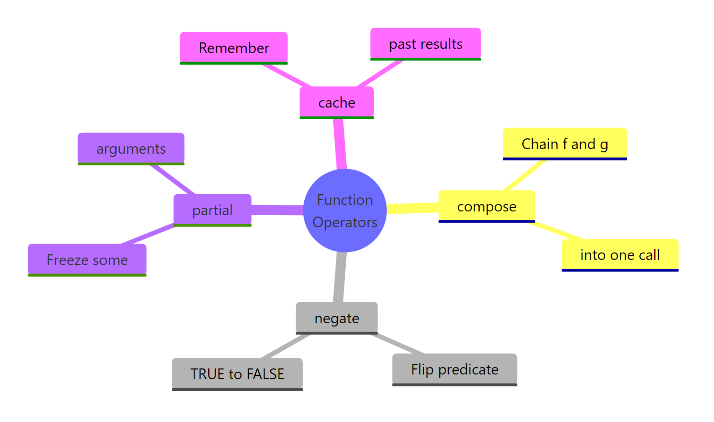

R Function Operators: Transform Existing Functions Without Rewriting Them
A function operator in R takes one or more functions as input and returns a new, transformed function. Unlike function factories that take settings, operators take functions themselves — letting you compose, negate, freeze arguments, or cache results without touching the original code.
What Is a Function Operator, and When Would You Need One?
Picture the classic "is positive" predicate. You already have is_positive(); now you need its opposite. The lazy route is to copy-paste a second function and change the comparison — and now you have two bodies to maintain. Base R's Negate() gives you the flip in one line, without touching the original.
Notice what did not happen. We never defined a new function body. Negate(is_positive) is the new function — and if tomorrow we change the definition of is_positive, the negated version follows automatically. That decoupling is what makes operators valuable: one edit, two aligned behaviours.
You are not restricted to the operators R ships with. Any function that accepts f and returns a new function that calls f inside is an operator. Here is the smallest possible example — it applies f to its own output, so twice(sqrt)(16) becomes sqrt(sqrt(16)).
The outer twice captures f in its environment, and the inner anonymous function uses that captured f every time the returned function is called. This closure mechanism is the beating heart of every operator in the rest of the post — keep it in mind as we move on.
Try it: Write a function operator ex_thrice(f) that applies f three times in a row. Test it by wrapping add1 and calling the result on 10.
Click to reveal solution
Explanation: The inner function calls f three times on its input. f is captured from the outer scope, so it persists even after ex_thrice has returned.
How Does compose() Chain Functions Into a Single Pipeline?
Composition is how you glue small functions into one bigger function. Mathematically, composing f and g means "run g, then feed the result to f". In R, the purrr package provides compose() to do exactly that — turn a list of functions into one callable unit you can pass around like any other.
Here is a classic use: you want the average magnitude of a vector of signed numbers. That is mean after abs. Without an operator, you would write a wrapper function; with compose(), you get the same result in a single line.
Reading compose(mean, abs) feels backwards at first, and that is intentional — by default it matches mathematical notation, where the rightmost function runs first. So abs_mean(vals) computes abs(vals) first, producing c(3, 5, 10, 8), then passes that to mean, which returns 6.5. The resulting abs_mean behaves like any other function: you can reuse it, pass it to map(), or compose it further.

Figure 1: How compose(f, g) threads input through g and then f into a single function.
If that right-to-left order trips you up, tell compose() to flip the direction with .dir = "forward". That way the functions execute left to right in the order you list them — more natural when you are already thinking in pipe terms. Here we build a label cleaner that trims whitespace, then lowercases, then removes spaces.
Both versions produce the same answer, but the compose() version is a single named object you can reuse on any label. The three-step version is only usable once, in this spot — reuse means copying it. Composition trades one line of definition for indefinite reuse.
f(g(x))), and switch to forward when you are building a pipeline that reads like dplyr or magrittr. The behaviour is identical — only the listing order changes.Try it: Use compose() to build ex_count_unique, a function that takes a vector and returns the count of distinct values (i.e., length of unique). Test it on c(1, 2, 2, 3, 3, 3).
Click to reveal solution
Explanation: unique() runs first (default backward direction) and returns c(1, 2, 3); length() then counts those three elements.
How Does partial() Freeze Arguments to Create Specialised Versions?
If compose() chains functions, partial() specialises them. Partial application means fixing some of a function's arguments in advance and leaving the rest to be filled in later. The result is a new function with a shorter argument list — perfect when you keep calling the same function with the same options.
The most common case: you are tired of typing mean(x, na.rm = TRUE) everywhere. Freeze na.rm = TRUE once with partial(), and you get an na.rm-safe mean that behaves like mean minus the missing-value trap.
The original mean is untouched — mean(x_na) still returns NA because we did not set na.rm. Our new mean_safe is a separate, narrower function that already knows what we want. Pass it to sapply() over a list of vectors with missing values and you avoid the na.rm = TRUE repetition entirely.
Another favourite: base log() takes an optional base argument. Freeze that argument and you have a specialised log2-style function for any base you want — no new body required.
Both log_base2 and log_base10 are one-argument functions now — you feed them a number and they return the logarithm. This is how you build a small family of related tools from a single general-purpose function in a couple of lines.
substitute() or tidy evaluation — need the expressions themselves, not pre-filled values. For those, use a regular wrapper function or the rlang::exec family instead.Try it: Use partial() to build ex_round2, a function that rounds a number to 2 decimal places. Test it on pi and on c(1.2345, 6.789).
Click to reveal solution
Explanation: partial(round, digits = 2) creates a new function that always rounds to 2 decimal places. The x argument is still open, so you pass numbers to it like any normal function.
How Can You Cache Slow Functions to Speed Up Repeat Calls?
Some functions are expensive — a network call, a database query, a simulation that chews through CPU. If you call them twice with the same input, the second call should be free. That is caching, and you can build a function operator that adds caching to any function without touching its source.
The mechanism is a closure. The operator defines a local list, returns an inner function that (a) checks whether the input has been seen, (b) returns the cached answer if yes, (c) runs the real function and stores the result if no. Because the list lives in the operator's environment, it survives between calls.
Two things to notice. The cache list is defined inside cache_fn and captured by the inner function, so every wrapped function gets its own private cache. The <<- assignment updates that captured list each time a new input arrives — without it, the update would vanish when the inner function returned.

Figure 2: A cached function operator checks for past results before running the slow work.
Now wrap a deliberately slow function and watch the second call become instantaneous. We use Sys.sleep(0.5) to fake a half-second computation; the first call pays that cost, the second call hits the cache and returns immediately.
Half a second on the first call, zero on the second. The slow computation ran once; every subsequent call with x = 10 returns the stored value without waking up slow_double. For pure functions — where the same input always produces the same output — this is free speed.
install.packages("memoise") and use memoise::memoise(f) to wrap any function, including ones with multi-argument inputs. Our cache_fn works for single-argument functions and illustrates the mechanism; switch to memoise when you need multi-arg support or invalidation controls.Try it: Wrap a function that returns Sys.time() in cache_fn() and call it twice with input "now". Both calls should return the same timestamp — because the cache locks in the first one.
Click to reveal solution
Explanation: The first call stores Sys.time() in the closure's cache under key "now". The second call finds the entry and returns it, so the timestamp is frozen — a clear signal the cache is working.
How Do You Build Your Own Function Operator From Scratch?
You now have enough of the pattern to write any operator you want. The shape is always the same: a function that takes f, defines an inner function using ... to forward arguments, does something extra (before, after, or around), and returns the inner function. Here is the template in plain language.
Let us make it concrete by building log_calls(), an operator that wraps any function so that each call prints its arguments and return value. It is the R equivalent of Python's @log decorator, and it is three lines of real code.
The ... lets the inner function accept whatever f accepts — one argument, three arguments, named arguments — without us hard-coding a signature. We print the inputs, run f(...), print the result, and return it unchanged so callers see the same value they would have seen from f alone.
Every call now logs itself to the console. The original sqrt is untouched; noisy_sqrt is the wrapped version. Drop this into a long pipeline and you can trace exactly which function saw which value — a debugging superpower that adds zero lines to the functions themselves.
function(f) function(...) { ...; f(...); ... }. Once you memorise that skeleton, the only question is what to put in the ... slots: logging, timing, retries, rate limiting, caching, input validation. Each is a one-page operator you can reuse across every function in your project.Try it: Build ex_before(f), an operator that prints "Calling..." before calling f(...) and then returns the normal result. Wrap sum and call it on c(1, 2, 3).
Click to reveal solution
Explanation: The inner function prints the message, then returns f(...). ... forwards every argument through, so the wrapper works on any function no matter its signature.
Practice Exercises
These are harder than the inline exercises — they combine multiple operators or ask you to invent a new one. The variables use distinct names (my_*) so your solutions do not collide with the tutorial code above.
Exercise 1: clean_mean with compose() and partial()
Build clean_mean, a function that takes a numeric vector (possibly with NAs), computes the mean ignoring NAs, and rounds the answer to 2 decimal places. Use partial() for the two argument-freezing steps and compose() for the chaining. Test it on c(1, NA, 2.3456, 5, NA, 9.8765).
Click to reveal solution
Explanation: partial(mean, na.rm = TRUE) runs first (rightmost, default backward direction) and gives 4.5555. partial(round, digits = 2) then rounds that to 4.56. Two one-liners plus one compose() call replace a custom function body.
Exercise 2: trace_calls with a shared call log
Write trace_calls(f) that wraps f and also records every call's input arguments in a closure-backed list. The operator should return a list with two elements: $wrapped (the new function) and $get_log (a function with no arguments that returns the accumulated call log). Test by wrapping sum, calling the wrapped version three times, then inspecting the log.
Click to reveal solution
Explanation: Both wrapped and get_log close over the same log variable, so get_log() can read what wrapped writes. The <<- is essential — without it, log would reset to an empty list on every call. Returning both functions as a list is how you give the caller read access to the operator's internal state.
Exercise 3: retry(f, n) that swallows n−1 errors
Build retry(f, n) that wraps f and calls it up to n times. If f throws an error, retry. If all n attempts error, return NA. Test on a flaky() function that fails the first 2 of every 3 calls.
Click to reveal solution
Explanation: tryCatch turns an error into NULL, the loop moves on to the next attempt, and the first successful result short-circuits out via return(). If every attempt fails, the loop finishes and the function returns NA.
Complete Example: A Safer, Faster Summariser
Let us tie it all together. Imagine a costly group-summary routine — in real life it might query a database, fit a model, or read a large file. We simulate the cost with Sys.sleep(1). We will cache it so repeat calls are free, then use partial() to specialise it to a specific grouping column so callers do not have to remember the arg name.
The first call pays the simulated one-second cost and computes the group means for cyl on mtcars. The second call returns the exact same data frame in zero time, because the cache key "mtcars_cyl_mpg" is already stored. We combined two operators — cache_fn for speed and a closure for the fixed inputs — to turn an expensive routine into a snappy lookup. No change to slow_group_mean itself.
Summary
Function operators give you a tiny vocabulary for transforming functions you already have, instead of writing new ones. The four patterns below cover most day-to-day needs, and the fifth — building your own — covers everything else.

Figure 3: The four function operators covered in this guide, grouped by what they do.
| Operator | Source | What it does | One-line example |
|---|---|---|---|
Negate(f) |
base R | Flips a predicate's TRUE/FALSE result | is_not_positive <- Negate(is_positive) |
compose(f, g) |
purrr |
Chains f(g(x)) into one function |
abs_mean <- compose(mean, abs) |
partial(f, ...) |
purrr |
Freezes some of f's arguments |
mean_safe <- partial(mean, na.rm = TRUE) |
cache_fn(f) |
custom or memoise::memoise |
Caches results for repeated inputs | fast <- cache_fn(slow_double) |
Key takeaways:
- Function operators share the shape
function(f) function(...) { ...; f(...); ... }. Memorise it and you can write any wrapper you need. - Closures are the mechanism that makes operators possible — the inner function remembers
fand any state from the outer call. - Compose and partial remove duplicated code; negate flips predicates; caching buys speed on pure functions.
purrr::compose(),purrr::negate(), andpurrr::partial()are the community-standard implementations;memoise::memoise()is the production-grade cache.
References
- Wickham, H. — Advanced R, 2nd Edition. CRC Press (2019). Chapter 11: Function operators. Link
- purrr documentation —
compose()reference. Link - purrr documentation —
negate()reference. Link - purrr documentation —
partial()reference. Link - memoise package — official docs. Link
- R base documentation —
Negate()and friends. Link - Wickham, H. — Advanced R, 2nd Edition. Chapter 10: Function factories (the companion concept). Link
Continue Learning
- Writing R Functions — the foundation every operator is built on, including argument handling and return values.
- R Function Factories — the sibling pattern: settings in, function out. Read this next to see how factories and operators differ.
- R Closures — the mechanism that lets operators remember
f, cached values, and call logs between calls.